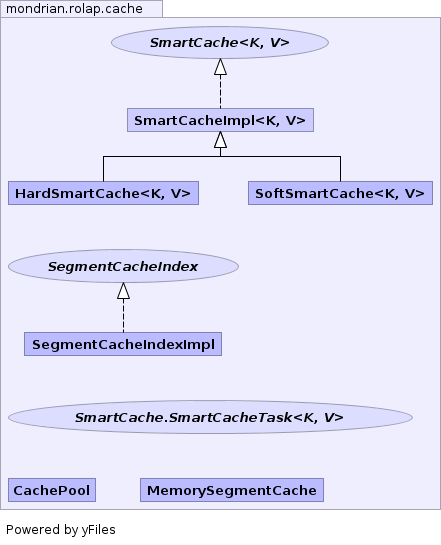

- Overview
- Package
- Class
- Tree
- Deprecated
- Index
- Help
| Interface | Description |
|---|---|
| SegmentCacheIndex |
Data structure that identifies which segments contain cells.
|
| SmartCache<K,V> |
Defines a cache API.
|
| SmartCache.SmartCacheTask<K,V> |
Defines a task to be run over the entries of the cache.
|
| Class | Description |
|---|---|
| CachePool |
A
CachePool manages the objects in a collection of
caches. |
| HardSmartCache<K,V> |
An implementation of
SmartCache that uses hard
references. |
| MemorySegmentCache |
Implementation of
SegmentCache that stores segments
in memory. |
| SegmentCacheIndexImpl |
Data structure that identifies which segments contain cells.
|
| SmartCacheImpl<K,V> |
A base implementation of the
SmartCache interface which
enforces synchronization with a ReadWrite lock. |
| SoftSmartCache<K,V> |
An implementation of
SmartCacheImpl which uses a
ReferenceMap as a backing object. |
